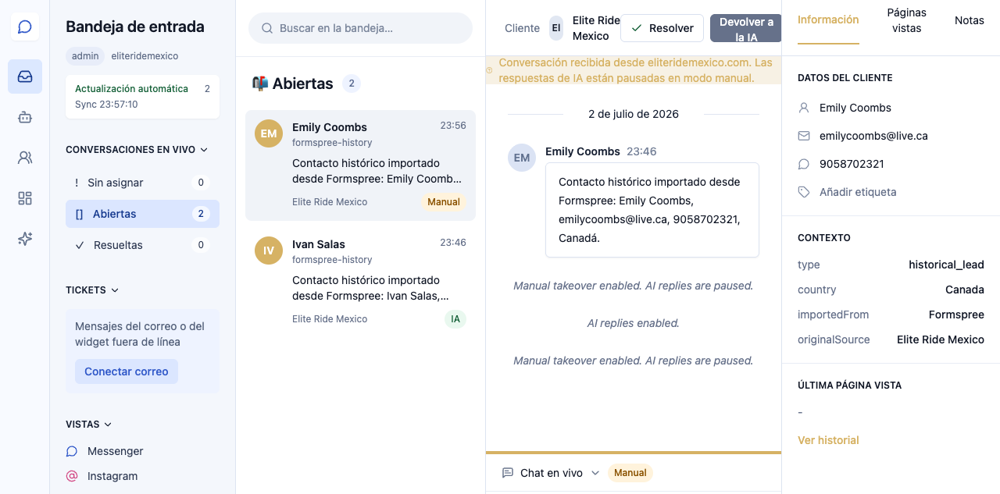
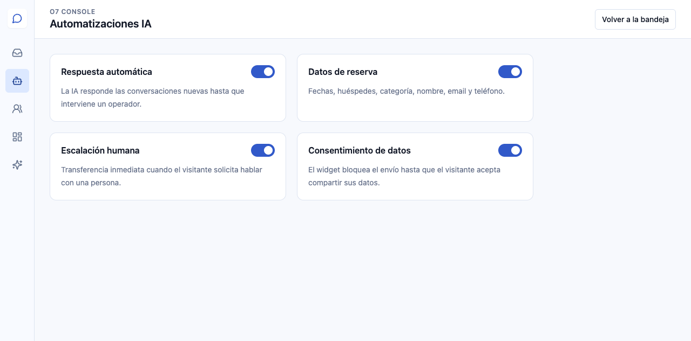
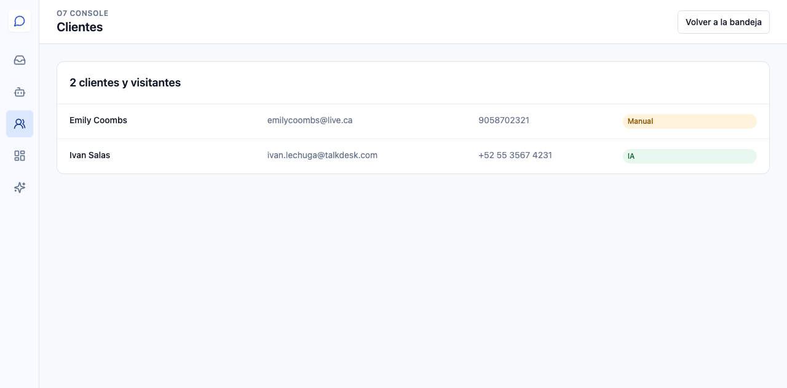
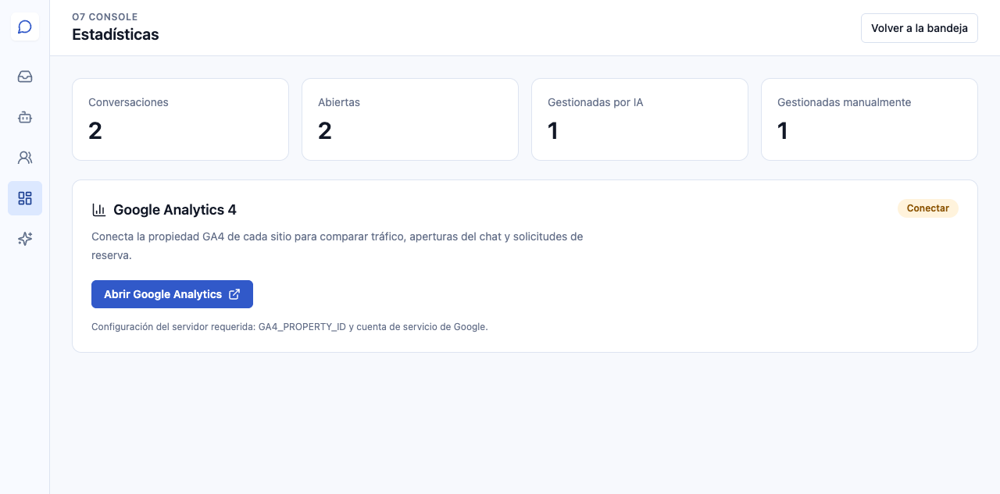
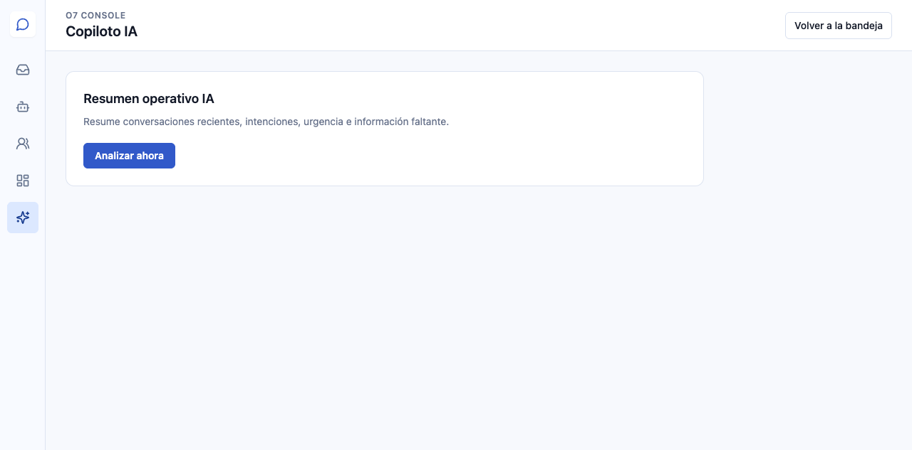

Acceso y Bandeja de entrada
Entre en https://olivia-ai.o7digital.com/sign-in con su cuenta Clerk autorizada. Cada cliente accede únicamente a su piel y sus datos.

- Tomar control pausa la IA.
- Devolver a la IA reactiva la atención automática.
- Resolver finaliza la conversación.
- FR / EN / ES cambia la interfaz y guarda la preferencia.
Respuestas y herramientas
Seleccione una conversación, pulse Tomar control, escriba y pulse Responder.
Los cinco botones ofrecen sugerencia IA, saludo, respuesta rápida, foco del campo y selección de archivo.
Los mensajes del visitante conservan su idioma original aunque el operador cambie el idioma de la interfaz.
Automatizaciones

Respuesta automática, recopilación de datos, escalación humana y consentimiento están disponibles por defecto.
Clientes y visitantes

Centraliza nombre, email, teléfono y estado. Los datos están separados por clientCode.
Estadísticas

Muestra actividad, gestión IA/manual y conexión con Google Analytics 4.
Copiloto IA

Resume conversaciones, identifica intención, sentimiento, urgencia e información faltante, y sugiere respuestas.
Configuración, seguridad y canales

Clerk gestiona sesiones, perfil y autenticación de dos factores.
Cada piel incluye por defecto widget web, WhatsApp Business, Facebook Messenger, Instagram Direct y email. Un canal marcado Por configurar necesita autorización y credenciales de la cuenta del cliente.
Nunca comparta contraseñas o tokens por chat ni los guarde en el navegador.